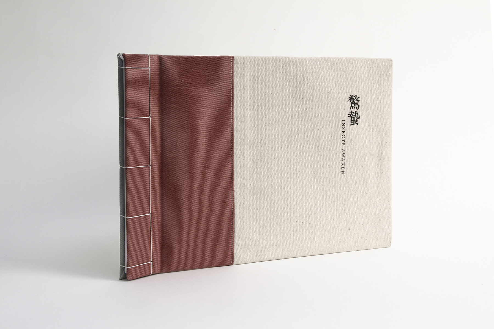

The Website Looks Better on a Bigger Screen
The Website Looks Better in a Horizontal View
PROJECT: BOOK ABOUT A BLOCK
驚蟄 INSECTS AWAKEN
Book Design | 2017 | College Project
This book is about a small alley called Spofford Street in Chinatown. Starting with all kinds of research and exploring of the block, I was fascinated by the cultures and stories carried with these residents when they came across the sea years or decades ago as refugees or immigrants.
This is also my first attempt to use two different languages in my design.
“驚蟄” is the 3rd of the 24 solar terms (節氣) in the traditional East Asian calendars.
The word “驚蟄” means the awakening of hibernating insects. “驚” is to start and “蟄” means hibernating insects. Traditional Chinese folklore says that during Jingzhe, thunderstorms will wake up the hibernating insects.
When you enter the alley, you awaken the "insects" in this block.
I resized the book to for a better online viewing, the physical book is 8"×12" because of the spine.
PROJECT: EXTENSION